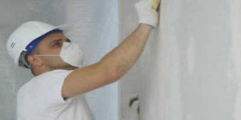
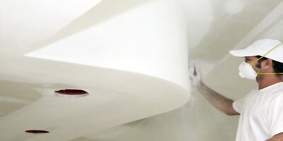
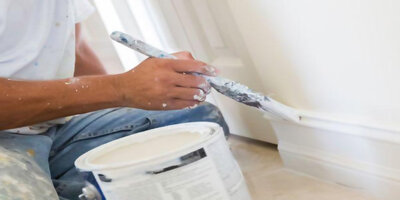
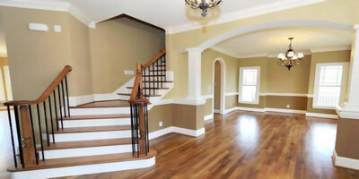
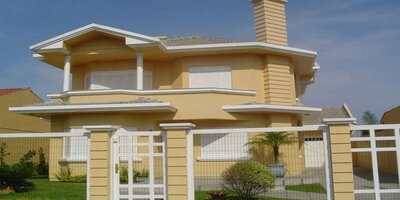

SOBRE NÓS
A House Paint, presente no mercado paranaense desde 1990, é uma das empresas líderes no segmento de pinturas em geral na cidade de Chapecó e região. A empresa atua nos segmentos acabamentos, gessos decorativos e pinturas de áreas internas ou externas de residências com finíssimo acabamento e qualidade.
NOSSA VISÃO
Ser reconhecida, pela qualidade dos serviços prestados e pelo desenvolvimento constante de seus colaboradores, como a melhor empresa de pintura no seu segmento.
NOSSA MISSÃO
Sempre oferecer serviços de qualidade respeitando os prazos e as metas estabelecidas por seus clientes
NOSSOS VALORES
# Respeitar o ser humano # Agir e crescer de forma ética e sustentável # Fazer bem feito e cada vez melhor
NOSSOS SERVIÇOS
A House Paint tem como princípio fundamental a extrema qualidade nos serviços prestados ao longo de sua história e atuação no segmento de acabamentos e pinturas residencias, veja a seguir quais serviços são prestados pela empresa que conta uma uma equipe de profissionais qualificados e sempre atualizados com as melhores técnicas e tecnologias existentes neste ramo de atuação.
ACABAMENTOS
Trabalhamos com diversos tipos de acabamentos de massa-corrida, texturas, revestimentos cerâmicos, porcelanatos.

GESSO
Nossa equipe realizada a instalação de gesso decorativo, com as melhores técnicas para reproduzir detalhes sofisticados em seus ambientes internos, molduras, rebaixamento de teto e multicamadas para iluminação.
Pintura de grades e aberturas
Utilizando materiais de alta qualidade e durabilidade a empresa realiza a pintura de grades, portões, portas e janelas internas ou externas.

PINTURAS EXTERNAS
A pintura externa residencial é realizada com extremo cuidado desde a limpeza e impermeabilização das superfícies até a pintura final sempre aplicando as melhores técnicas para que a qualidade do serviço não seja comprometida ao longo do tempo.
PINTURAS INTERNAS
Trabalhamos em obras novas e também em residências usadas, com foco total na qualidade para que o acabamento final seja impecável, a pintura interna conta com profissionais especializados para cada tipo de superfície: madeira, alvenaria, gesso, texturas e revestimentos especiais.

CLIENTES
Aqui você pode visualizar as imagens de alguns serviços já realizados pela House Paint ao longo do tempo, recomendamos aos nossos clientes a visualização das fotos e também recomendamos visitas técnicas em algumas obras para que verifiquem como nossa equipe trabalha.
  
OPINIÕES E DEPOIMENTOS DE ALGUNS CLIENTES

Tulio Lemos Veloso Machado
" Fiquei satisfeito com os serviços de pintura da House Paint. É uma empresa comprometida com a satisfação do cliente e isso é fundamental pra mim.

Rodrigo Pacheco
" A House Paint estava certa sobre o orçamento. Disseram-me o custo para pintar minha casa e entregaram exatamente o que eles disseram que seria. Uma raridade nos dias de hoje. "

Norberto Antunes
" Muito obrigado! Estou 100% satisfeito com o trabalho. Eles fizeram um trabalho grande, profissional. Meus agradecimentos à equipe por seu bom trabalho e profissionalismo. "

Raquel Andrade
" Quando eu chamei a empresa House Paint para fazer a pintura e acabamentos da minha casa, o prazo era o aspecto fundamental. Eu precisava ter esse serviço em um tempo específico e todos me deram um prazo maior. A House Paint fez o trabalho no prazo prometido "

Kas & Natalie Melowsky
" Quando falei com o funcionário da House Paint responsável pelo orçamento, eu tinha dois outros pintores vindo fazer o orçamento, mas eu cancelei a visita deles. Eu estava totalmente a vontade e sentia que o funcionário da House Paint estava sendo honesto. "
ORÇAMENTOS
A House Paint conta com uma equipe especializada para realizar o orçamento de sua obra, utilize esta ferramenta para solicitar um orçamento e receber uma visita em sua casa para um levantamento mais preciso e detalhado de suas necessidades.
Preencha e envie o formulário abaixo.
CONTATOS
Fique a vontade para entrar em contato com a gente, solicitar um orçamento ou tirar suas dúvidas.
⦁ Endereço: Av. Nereu Ramos, 3777D - Seminário, Chapecó - SC, 89813-000
⦁ Horário de atendimento: 07:00 às 19:00 de segunda à sábado.
⦁ Telefone: (49) 3319-2600
⦁ E-mail: contato@housepaint.com.br
LOCALIZAÇÃO MAPS
OU